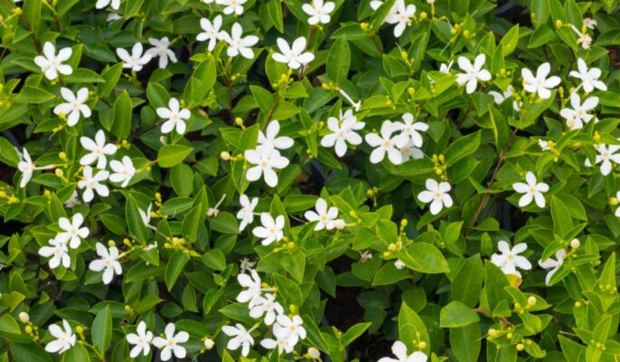

Overview
Yutika (Juhi) – Jasminum auriculatum is a herb mentioned in Ayurveda for the treatment of burning micturition, treatment of wounds, diseases of the oral cavity, headaches, and poison cases.
Botanical Name
Jasminum auriculatum Vahl.
Family
Oleaceae
Regional Names
- Hindi: Juhi
- English: Jasmine
- Kannada: Mallige
- Tamil: Malligai
Sanskrit Synonyms
- Sumana
- Vasanthi
- Punyagandha
- Jati
- Yuthika
- Bala
- Balapushpa
- Gunojwala
- Kandi
- Charumoda
- Shikhandini
- Pushpagandha
2nd Type, Yellow Flower (Kaiyadeva Nighantu)
- Swarnayuthika
- Peetika
- Peeta Yuthika
- Hemapushpi
- Peetapushpi
Classical Categorization
Dhanvantari Nighantu: Amradi varga
Bhavaprakasha: Pushpa varga
Kaiyyadeva Nighantu: Oushadhi varga
Raja Nighantu: Karaveeradi varga
Shodala Nighantu: Amradi varga
Properties, Part Used, Dosage
- Rasa (Taste): Tikta (Bitter), Kashaya (Astringent)
- Guna (Qualities): Laghu (Light for digestion)
- Vipaka: Katu (Undergoes Pungent taste after digestion)
- Veerya (Potency): Sheeta (Cold)
- Karma (Actions): Pitta shamaka (reduces the vitiated Pitta dosha)
Part Used
Root
Dosage
Decoction: 50 to 70 ml
Chemical Constituents
The leaf of the plant contains lupeol, hentriacontane, and n-tricantanol, jasminol, d-mannitol, and jasmine. The flower buds contain indole, benzyl acetate, and methyl anthranilate.
Uses of Yutika
- The decoction prepared from the roots of Jasminum auriculatum is given in a dose of 50-60 ml to treat burning micturition and renal calculi.
- The paste prepared from the root and leaf of the plant is applied locally over the wound to treat it.